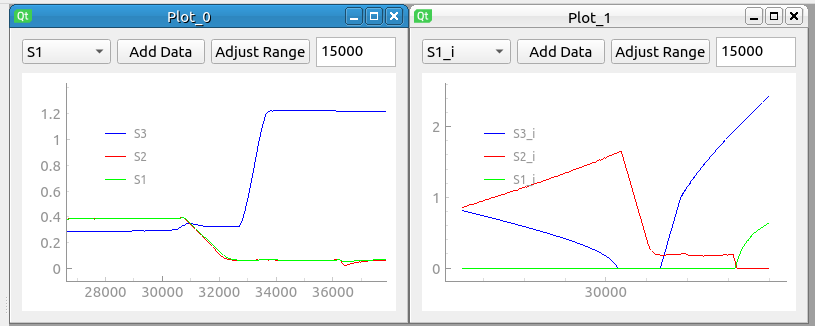

User Guide
Getting Started
When starting the program, you will be presented with the interface shown below. This interface is meant to mimic code 552’s Labquisition software.
The simulation timer automatically begins on program startup. The toolbar on the left will show a list of the active channels that are currently collecting data.
The top toolbar will allow you to add plots, save, and open configurations. The bottom widget is used for controlling the stages during simulation.
Example CADR Configuration
The program will automatically open the default CADR example configuration. This is a 3-stage CADR with a heat sink at 0.9 K, specifically, this is the EXCLAIM mission CADR. By creating new plots, we can take a look at the temperatures and currents of these stages. Let’s run this simulation and compare it to actual laboratory data.
As you can see, the stages are all sitting around 0.9K and have no current. We need to give temperature setpoints to the PID controllers to start magnetizing these stages. This can be done with the bottom widget.
Each stage has a hot key associated with its controller (‘ctrl + <stage number>’). Let’s magnetize stages 2 and 3 to start the initial bootstrap process. We do this by imputing 1.8K in the text box, and then pressing ‘ctrl+2’ followed by ‘ctrl+3’ to give setpoints to stages 2 and 3 respectively.
Stages 2 and 3 will now charge at 1.8K until they reach max current, we need to let them cool down before starting our adiabatic demag.
Once the stages are cool, we need to pull stage 4 down below its heat switch target temperature at around 0.9K. Let’s set stage 2 and 3’s setpoints to 0.4 and 0.3K respectively.
We are now charging stage 2 by using stage 3 as its heat sink. When we reach enough current in stage 2, we can pull the stage below its heat switch target temperature of around 0.3K. Let’s set stage 2’s target temperature to 0.09K so that we can charge stage 1.
With stage 2 below 0.1K, stage 1 should be ready to start building current. To do this, we need to turn on the superconducting heat switches helmholtz coil. This can be done with the shortcut ‘ctrl+4’. Once stage 1 builds enough entropy capacity, we are ready to continuously cycle!
To operate continuously, we simply need to recycle stages 2 and 3 when necessary, while keeping stage 1’s target temperature at 0.1K.
CONGRATULATIONS! We have successfully run the CADR to operate at its design temperatures. We can now use this simulation to compare with our laboratory tests.
The plot below shows the actual data collected from the EXCLAIM 3-stage CADR that we are attempting to simulate.
Looking at data taken from the actual EXCLAIM 3-stage CADR, it appears that our simulation is performing well. Just be looking at the ramp rates, we can see that the heat transfer between stages 2 and 3 should theoretically be higher, we can now make changes to the simulator to see what could be causing this.
If further information or guidance is needed while running this simulation, please email Jacob.s.nellis@nasa.gov